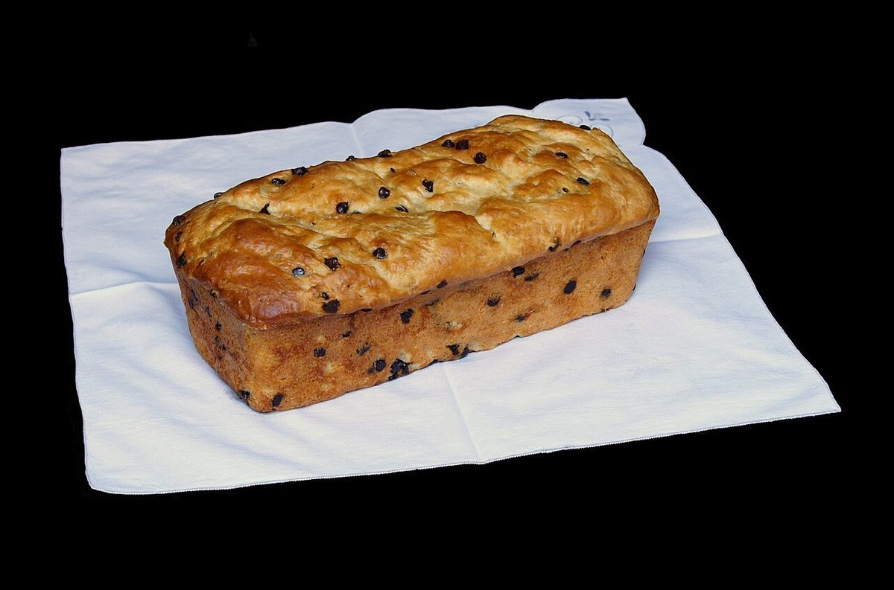

カフェ / 愛知県一宮市浅井町河端流33−１
TATSUCAFE
Tの横棒の下に、Aの頭がもぐりこむ。
活字の世界でいちばん有名な「詰める文字の組」を、このサイトの背骨にしました。


01
TとAのあいだを、ひとつずつ詰める
+40ゆとりを持たせた字間
0そのままの字間
−60TがAに覆いかぶさる字間
ページを移るたびに、字間が少しずつ詰まります。ホームは0、アクセスは−80。上のナビの数字がその値です。
02
イメージ写真



写真はすべてフリー素材のイメージです。お店の商品を示すものではありません。
03
お店の情報
| 所在地 | 愛知県一宮市浅井町河端流33−１ |
|---|---|
| 電話 | 0586-52-4226 |
| 営業時間 | 準備中 |
| 定休日 | 準備中 |
| ご予約 | 準備中 |
| 駐車場 | 準備中 |
| SNS | Instagram @tatsucafe |
このサイトのテーマ「TAのカーニング」は、制作側の連想で、お店の理念・由来とは無関係です。